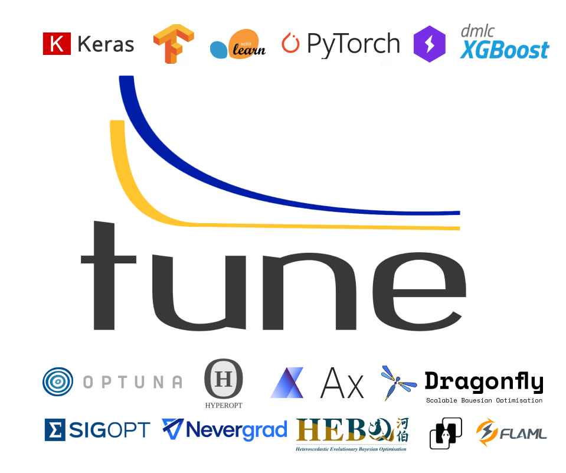

Ray Tune: Hyperparameter Tuning
Contents


Ray Tune: Hyperparameter Tuning#
{kind=link}
Tune is a Python library for experiment execution and hyperparameter tuning at any scale. You can tune your favorite machine learning framework (PyTorch, XGBoost, Scikit-Learn, TensorFlow and Keras, and more) by running state of the art algorithms such as Population Based Training (PBT) and HyperBand/ASHA. Tune further integrates with a wide range of additional hyperparameter optimization tools, including Ax, BayesOpt, BOHB, Dragonfly, FLAML, HEBO, Hyperopt, Nevergrad, Optuna, SigOpt, skopt, and ZOOpt.
Click on the following tabs to see code examples for various machine learning frameworks:
To run this example, install the following: pip install "ray[tune]".
In this quick-start example you minimize a simple function of the form f(x) = a**2 + b, our objective function.
The closer a is to zero and the smaller b is, the smaller the total value of f(x).
We will define a so-called search space for a and b and let Ray Tune explore the space for good values.
from ray import tune
def objective(config): # ①
score = config["a"] ** 2 + config["b"]
return {"score": score}
search_space = { # ②
"a": tune.grid_search([0.001, 0.01, 0.1, 1.0]),
"b": tune.choice([1, 2, 3]),
}
tuner = tune.Tuner(objective, param_space=search_space) # ③
results = tuner.fit()
print(results.get_best_result(metric="score", mode="min").config)
① Define an objective function.
② Define a search space.
③ Start a Tune run and print the best result.
To tune your Keras models with Hyperopt, you wrap your model in an objective function whose config you
can access for selecting hyperparameters.
In the example below we only tune the activation parameter of the first layer of the model, but you can
tune any parameter of the model you want.
After defining the search space, you can simply initialize the HyperOptSearch object and pass it to run.
It’s important to tell Ray Tune which metric you want to optimize and whether you want to maximize or minimize it.
from ray import tune
from ray.tune.search.hyperopt import HyperOptSearch
import keras
def objective(config): # ①
model = keras.models.Sequential()
model.add(keras.layers.Dense(784, activation=config["activation"]))
model.add(keras.layers.Dense(10, activation="softmax"))
model.compile(loss="binary_crossentropy", optimizer="adam", metrics=["accuracy"])
# model.fit(...)
# loss, accuracy = model.evaluate(...)
return {"accuracy": accuracy}
search_space = {"activation": tune.choice(["relu", "tanh"])} # ②
algo = HyperOptSearch()
tuner = tune.Tuner( # ③
objective,
tune_config=tune.TuneConfig(
metric="accuracy",
mode="max",
search_alg=algo,
),
param_space=search_space,
)
results = tuner.fit()
① Wrap a Keras model in an objective function.
② Define a search space and initialize the search algorithm.
③ Start a Tune run that maximizes accuracy.
To tune your PyTorch models with Optuna, you wrap your model in an objective function whose config you
can access for selecting hyperparameters.
In the example below we only tune the momentum and learning rate (lr) parameters of the model’s optimizer,
but you can tune any other model parameter you want.
After defining the search space, you can simply initialize the OptunaSearch object and pass it to run.
It’s important to tell Ray Tune which metric you want to optimize and whether you want to maximize or minimize it.
We stop tuning this training run after 5 iterations, but you can easily define other stopping rules as well.
import torch
from ray import tune, air
from ray.air import session
from ray.tune.search.optuna import OptunaSearch
def objective(config): # ①
train_loader, test_loader = load_data() # Load some data
model = ConvNet().to("cpu") # Create a PyTorch conv net
optimizer = torch.optim.SGD( # Tune the optimizer
model.parameters(), lr=config["lr"], momentum=config["momentum"]
)
while True:
train(model, optimizer, train_loader) # Train the model
acc = test(model, test_loader) # Compute test accuracy
session.report({"mean_accuracy": acc}) # Report to Tune
search_space = {"lr": tune.loguniform(1e-4, 1e-2), "momentum": tune.uniform(0.1, 0.9)}
algo = OptunaSearch() # ②
tuner = tune.Tuner( # ③
objective,
tune_config=tune.TuneConfig(
metric="mean_accuracy",
mode="max",
search_alg=algo,
),
run_config=air.RunConfig(
stop={"training_iteration": 5},
),
param_space=search_space,
)
results = tuner.fit()
print("Best config is:", results.get_best_result().config)
① Wrap a PyTorch model in an objective function.
② Define a search space and initialize the search algorithm.
③ Start a Tune run that maximizes mean accuracy and stops after 5 iterations.
With Tune you can also launch a multi-node distributed hyperparameter sweep in less than 10 lines of code. And you can move your models from training to serving on the same infrastructure with Ray Serve.
Getting Started
In our getting started tutorial you will learn how to tune a PyTorch model effectively with Tune.
Key Concepts
Understand the key concepts behind Ray Tune. Learn about tune runs, search algorithms, schedulers and other features.
User Guides
Our guides teach you about key features of Tune, such as distributed training or early stopping.
Examples
In our examples you can find practical tutorials for using frameworks such as scikit-learn, Keras, TensorFlow, PyTorch, and mlflow, and state of the art search algorithm integrations.
Ray Tune FAQ
Find answers to commonly asked questions in our detailed FAQ.
Ray Tune API
Get more in-depth information about the Ray Tune API, including all about search spaces, algorithms and training configurations.
Why choose Tune?#
There are many other hyperparameter optimization libraries out there. If you’re new to Tune, you’re probably wondering, “what makes Tune different?”
Projects using Tune#
Here are some of the popular open source repositories and research projects that leverage Tune. Feel free to submit a pull-request adding (or requesting a removal!) of a listed project.
Softlearning: Softlearning is a reinforcement learning framework for training maximum entropy policies in continuous domains. Includes the official implementation of the Soft Actor-Critic algorithm.
Flambe: An ML framework to accelerate research and its path to production. See flambe.ai.
Population Based Augmentation: Population Based Augmentation (PBA) is a algorithm that quickly and efficiently learns data augmentation functions for neural network training. PBA matches state-of-the-art results on CIFAR with one thousand times less compute.
Fast AutoAugment by Kakao: Fast AutoAugment (Accepted at NeurIPS 2019) learns augmentation policies using a more efficient search strategy based on density matching.
Allentune: Hyperparameter Search for AllenNLP from AllenAI.
machinable: A modular configuration system for machine learning research. See machinable.org.
NeuroCard: NeuroCard (Accepted at VLDB 2021) is a neural cardinality estimator for multi-table join queries. It uses state of the art deep density models to learn correlations across relational database tables.
Learn More About Ray Tune#
Below you can find blog posts and talks about Ray Tune:
[blog] Tune: a Python library for fast hyperparameter tuning at any scale
[blog] Simple hyperparameter and architecture search in tensorflow with Ray Tune
[slides] Talk given at RISECamp 2019
[video] Talk given at RISECamp 2018
[video] A Guide to Modern Hyperparameter Optimization (PyData LA 2019) (slides)
Citing Tune#
If Tune helps you in your academic research, you are encouraged to cite our paper. Here is an example bibtex:
@article{liaw2018tune,
title={Tune: A Research Platform for Distributed Model Selection and Training},
author={Liaw, Richard and Liang, Eric and Nishihara, Robert
and Moritz, Philipp and Gonzalez, Joseph E and Stoica, Ion},
journal={arXiv preprint arXiv:1807.05118},
year={2018}
}